As a core component of the energy internet, the communication technology of energy storage systems directly impacts the system's reliability, real-time performance, and intelligence. From monitoring individual cells within battery clusters to remote dispatching of grid-level energy storage power stations, the requirements for communication methods vary significantly across different scenarios. The following section provides a comprehensive analysis of the core characteristics of mainstream communication methods for energy storage systems, covering their technical principles and application scenarios.
Internal Communication Protocols
CAN Bus (Controller Area Network)
CAN Bus is the dominant communication protocol at the cell, module, and rack levels of a BESS. Originally developed for the automotive industry, its adoption in energy storage systems is a natural extension, since the battery market was largely pioneered by the electric vehicle sector.
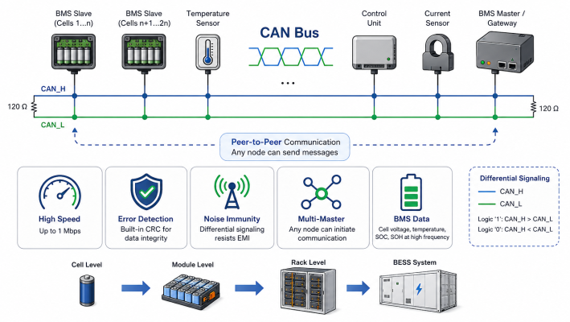
CAN Bus operates as a peer-to-peer protocol that allows multiple nodes (BMS slaves, sensors, control units) to communicate without a central master. Its key advantages in energy storage include:
- High speed: Data transfer at up to 1 Mbps
- Error detection: Built-in cyclic redundancy checks (CRC) ensure data integrity
- Noise immunity: Differential signaling makes it highly resistant to electromagnetic interference — critical in high-voltage battery environments
- Multi-master capability: Any node can initiate communication, enabling decentralized fault detection
In practice, CAN Bus is used for BMS slave-to-master communication — transmitting cell voltages, temperatures, State of Charge (SOC), and State of Health (SOH) data at high frequency.
Modbus RTU (RS-485)
Modbus RTU, transmitted over RS-485 physical wiring, is one of the most widely deployed protocols in BESS systems. It operates on a simple master-slave principle where a single master device (typically the EMS or local controller) polls data from multiple slave devices (PCS, smart meters, environmental sensors).
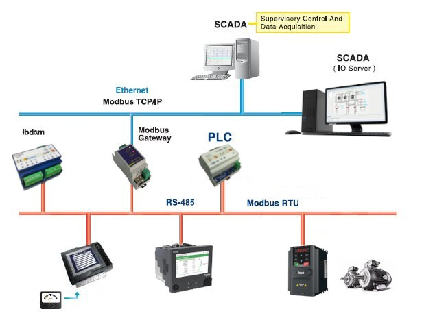
Modbus RTU over RS-485 is favored in BESS because of:
- Simplicity and reliability: Its straightforward request-response model is easy to implement and debug
- Cost-effectiveness: RS-485 wiring is inexpensive and widely available
- Wide hardware compatibility: The vast majority of industrial components — inverters, meters, sensors — natively support Modbus RTU
- Long cable runs: RS-485 supports communication distances of up to 1,200 meters
Peripheral devices such as smart meters, HVAC sensors, and string monitoring units typically communicate to the BESS controller via Modbus RTU. It is also used as a bridge between the PCS and other parts of the BESS.
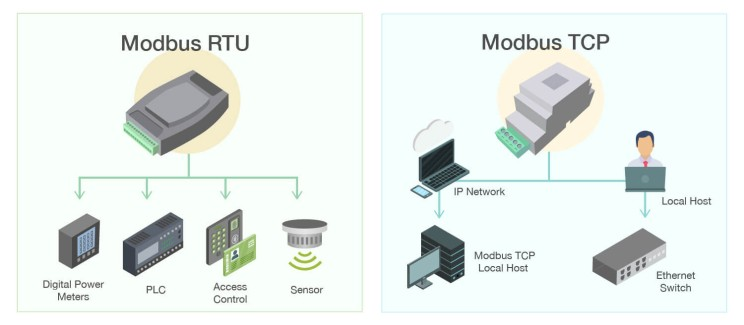
Modbus TCP/IP
Modbus TCP/IP is the Ethernet-based variant of the Modbus protocol, encapsulating Modbus data within TCP/IP packets for transmission over standard local area networks. In BESS systems, Modbus TCP/IP is commonly used at the EMS level to communicate with the PCS, SCADA, and higher-level control systems. It offers faster communication speeds than Modbus RTU and easier integration with IT infrastructure, while retaining full backward compatibility with Modbus register maps.
System-Level Communication Protocols
IEC 61850
IEC 61850 is an international standard for substation automation and smart grid communication, and it is rapidly becoming the gold standard for grid-connected BESS. It was developed specifically to enable interoperability between Intelligent Electronic Devices (IEDs) from different manufacturers — a critical requirement in the fragmented energy storage ecosystem.
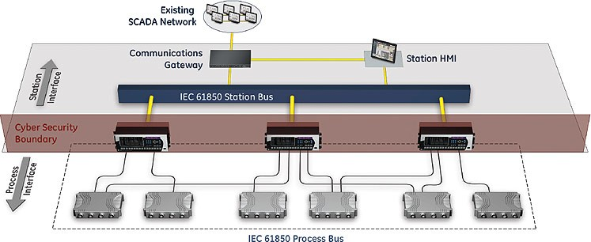
IEC 61850 offers several powerful capabilities:
- GOOSE Messaging (Generic Object Oriented Substation Event): GOOSE enables ultra-fast, peer-to-peer messaging between IEDs with transmission latencies within 4 milliseconds. It uses a publisher-subscriber multicast mechanism and is essential for protection functions, emergency stops, and fault isolation in BESS microgrid applications.
- Sampled Values (SV): Used for high-speed, real-time transmission of analog measurements (current, voltage waveforms) between merging units and protection relays.
- MMS (Manufacturing Message Specification): Used for control and monitoring over TCP/IP networks.
- Standardized Data Models: IEC 61850 uses standardized object models (Logical Nodes, Data Objects) to describe BESS components, enabling true plug-and-play interoperability.
Research confirms that while the standard was originally designed for substations, it is highly applicable to BESS and smart grid integration, though enhancements to the data model are required to fully capture battery-specific parameters.
The EMS in a BESS typically uses IEC 61850 for communication with the PCS, protection relays, and external grid-side equipment.
IEC 60870-5-104 (IEC 104)
IEC 104 is a telecontrol protocol widely used for communication between SCADA master stations and Remote Terminal Units (RTUs) or intelligent field devices over TCP/IP networks. In BESS deployments, IEC 104 serves as the communication link between the BESS EMS and the utility's SCADA or Energy Management System — particularly in grid-scale projects where the storage system must respond to dispatch commands from the grid operator.
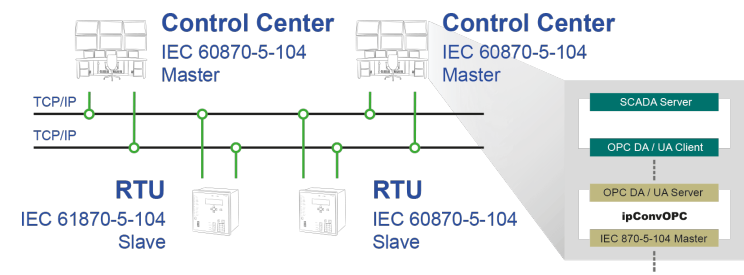
IEC 104 is the transmission protocol of choice for:
- Telemetry reporting (active/reactive power, SOC, alarms)
- Telecontrol (charge/discharge set-points from the grid operator)
- Time-stamped event logging for operational audits
DNP3 (Distributed Network Protocol 3)
DNP3 was developed by GE Harris and has been an open, publicly managed protocol since 1993. It is the dominant utility communication protocol in North American electric and water utilities for SCADA master-to-outstation communication.
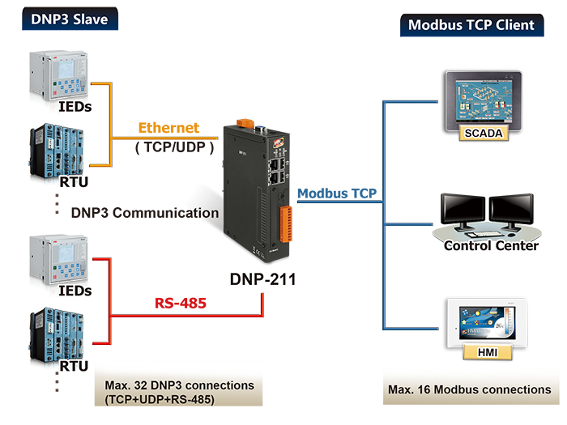
In BESS projects connected to North American grids, DNP3 is frequently mandated for:
- Communication between the BESS controller and the utility SCADA master station
- Telemetry of power output, SOC, and alarm states
- Remote control commands for dispatch and curtailment
DNP3 supports serial and Ethernet physical media, and its enhanced OSI 3-layer model includes a Data Link Layer for error detection, a Transport Function, and an Application Layer. It is listed alongside IEEE 2030.5 and SunSpec Modbus as one of the three protocols specified in IEEE 1547-2018 for DER interconnection.
Cloud and IoT Communication Protocols
MQTT (Message Queuing Telemetry Transport)
MQTT is a lightweight, publish-subscribe messaging protocol originally designed for low-bandwidth, high-latency networks. It is increasingly adopted in BESS systems for cloud-based monitoring, remote asset management, and IoT data pipelines.
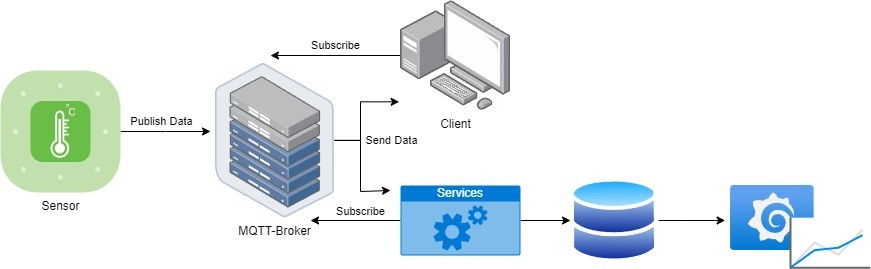
MQTT's architecture decouples data producers (BESS devices) from data consumers (cloud platforms, analytics engines) through a central broker. Devices publish data to specific "topics," and cloud applications subscribe to topics of interest — enabling scalable, real-time fleet monitoring across multiple BESS sites. Its low memory footprint makes it ideal for edge gateway devices.
In modern BESS deployments, MQTT bridges the gap between operational technology (OT) data from field devices and information technology (IT) systems in the cloud, supporting predictive maintenance, performance analytics, and remote diagnostics.
OPC UA (Open Platform Communications Unified Architecture)
OPC UA is a platform-independent, industrial-grade communication standard for secure machine-to-machine and machine-to-cloud data exchange. Released by the OPC Foundation in 2008, it has become a cornerstone of IoT integration, offering:
- Standardized data modeling: OPC UA defines information models that map BESS operational data into structured, semantically rich objects
- End-to-end security: Built-in encryption, authentication, and access control mechanisms
- Scalability: Runs on PLCs, edge controllers, servers, and cloud platforms
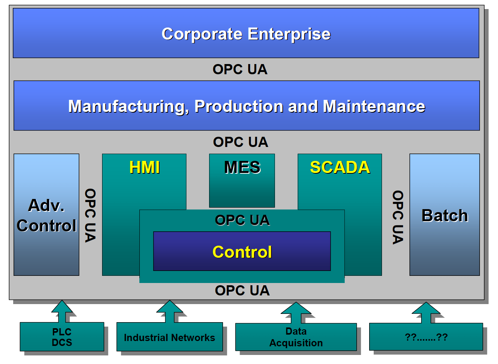
In BESS systems, OPC UA is used for northbound communication from local SCADA to plant-level historians and enterprise systems. A common architecture combines OPC UA (for local, structured data exchange) with MQTT (for cloud transport) — the OPC UA PubSub specification published in 2018 enables this integration directly.
Grid Integration and DER Communication Standards
IEEE 2030.5 / SunSpec CSIP
IEEE 2030.5 is an application-layer standard designed specifically for communication between utilities and Distributed Energy Resources (DERs) — including battery storage systems. It uses RESTful web services over TCP/IP (typically Wi-Fi or LTE) and enables utilities to remotely manage DER functions such as voltage/VAR control, frequency response, and export limits.
SunSpec Alliance Common Smart Inverter Profile (CSIP) implements IEEE 2030.5 for solar and storage systems, and California's Rule 21 mandates its use for DERs connected to Investor-Owned Utilities. The standard is gaining global adoption as grids incorporate more distributed storage and is listed alongside DNP3 and SunSpec Modbus as a mandated DER communication protocol under IEEE 1547-2018.
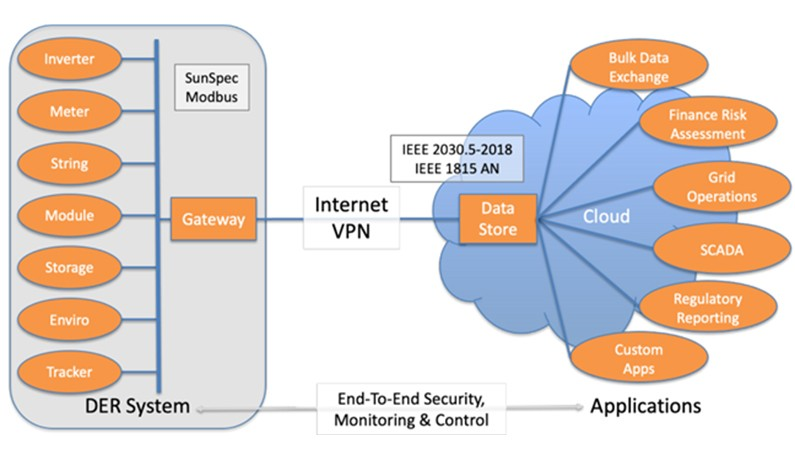
SunSpec Modbus
SunSpec Modbus is an industry alliance specification that defines standardized Modbus register maps for solar and storage equipment. It ensures interoperability between inverters, batteries, and monitoring systems from different manufacturers, reducing integration complexity for system integrators and EPCs. SunSpec specifications are free to download and widely adopted in the solar-plus-storage industry.
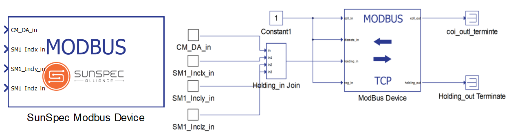
DIDO — Digital Input/Digital Output
Beyond software-based protocols, DIDO (Digital Input/Digital Output) signals remain essential for hardwired, instantaneous signaling that bypasses software latency. DIDO is used for:
- Emergency stop (E-stop) signals from fire detection panels to the BMS/PCS
- Grid trip signals from protection relays
- Breaker status feedback
- Safety interlock signals between systems
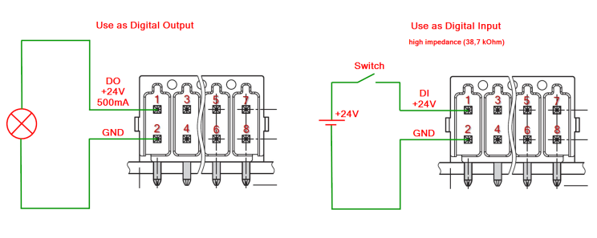
Because DIDO bypasses all software layers, it provides deterministic, millisecond-level response times that no software protocol can match — making it indispensable for critical safety functions.
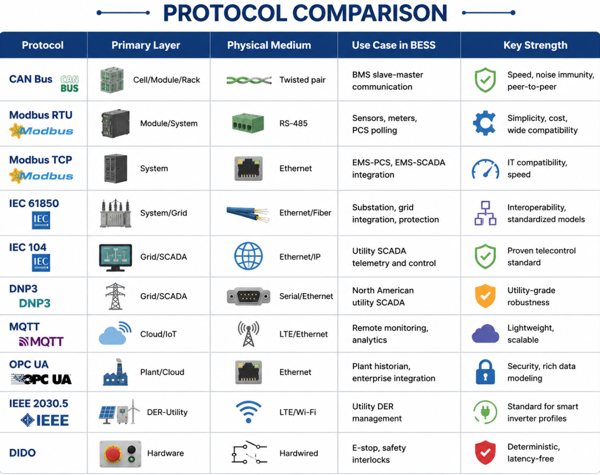
Cybersecurity in BESS Communication
As BESS systems become increasingly networked and grid-connected, cybersecurity becomes an operational imperative. Key standards governing BESS communication security include:
- IEC 62443: The international framework for cybersecurity in industrial automation and control systems (IACS). IEC 62443-4-2 defines technical security requirements for individual BESS components, including authentication, access control, data integrity, and encryption. Leading BMS vendors are now achieving IEC 62443-4-2 certification as a market differentiator.
- NERC CIP: Applicable to BESS connected to the bulk electric system in North America, mandating cybersecurity controls for critical infrastructure.
- NIS2 Directive: The European Network and Information Security directive mandates risk management, incident reporting, and supply chain security for critical infrastructure operators including BESS.
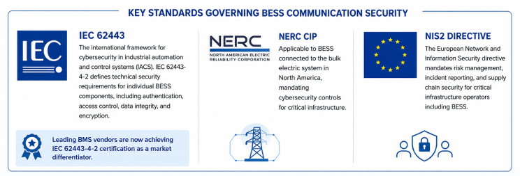
Best practices for BESS communication security include network segmentation using VLANs, encrypted communication channels, role-based access control, and redundant communication paths for resilience against cyber events.
The Role of Protocol Gateways
One of the most persistent challenges in BESS integration is the "Tower of Babel" problem — different subsystems from different manufacturers communicate using different protocols. A battery pack may speak CAN Bus; the PCS may use Modbus TCP; the HVAC system may use BACnet; and the grid interface may require IEC 61850 or DNP3.
Protocol gateways (or Storage Unit Controllers) solve this by acting as translation hubs — polling data from devices in their native protocol and re-publishing it in a unified format for higher-level systems. Modern gateways from vendors like HMS Networks, Moxa, and similar companies can simultaneously support CAN, Modbus, BACnet, KNX, IEC 61850, and OPC UA — enabling centralized control across a heterogeneous device ecosystem.
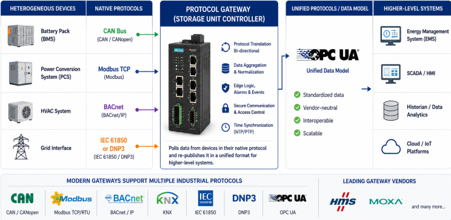
Conclusion
The communication architecture of a modern BESS is a layered ecosystem of protocols, physical media, and security frameworks. At the cell level, CAN Bus provides fast, noise-immune data exchange within the BMS. RS-485/Modbus RTU connects peripheral sensors and meters. At the system level, IEC 61850 enables interoperable grid integration, while IEC 104 and DNP3 serve as the telecontrol backbone for utility SCADA. In the cloud, MQTT and OPC UA bridge OT data to IT analytics platforms. Across all layers, hardware DIDO signals provide the last line of defense for safety-critical functions, and fiber optic cabling ensures EMI-immune, high-bandwidth connectivity in electrically noisy BESS environments.
For BESS developers, integrators, and asset owners in India and globally, understanding this communication stack is essential — not just for technical interoperability, but for ensuring grid code compliance, operational resilience, and cybersecurity readiness as battery storage scales toward terawatt-hour deployments.